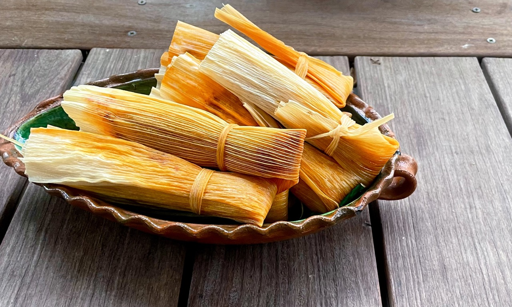

Wrapped in Tradition, Savored in Every Bite
Indulge your taste buds in the rich, savory experience of tamales, a cherished tradition that has been delighting palates for generations.
Each tamale is a masterpiece, crafted from masa (corn dough) and filled with a variety of mouthwatering ingredients—from succulent meats and
zesty cheeses to vibrant vegetables and fragrant spices.
Wrapped in corn husks and steamed to perfection, tamales offer a delightful blend of flavors and textures that make them a perfect choice
for any occasion, whether it’s a festive gathering or a cozy family meal.
Ingredients
- 2 lbs pork shoulder, cubed
- 4 cups chicken broth
- 1 onion, quartered
- 4 cloves garlic, minced
- 2 tsp cumin, oregano, chili powder
- Salt, pepper to taste
- 1 cup red salsa
- 4 cups masa harina
- 1 tsp baking powder, salt
- 1 cup lard or shortening
- 3-4 cups chicken broth
- 20-25 soaked corn husks
Steps
- Simmer pork, broth, onion, garlic, spices until tender (2-3 hours). Shred and mix with salsa.
- Blend masa, baking powder, and salt with whipped lard and enough broth to form a spreadable dough.
- Spread masa on husks, add filling, fold, and steam for 1-1.5 hours until masa pulls away from husk.
- Enjoy warm with salsa or toppings!